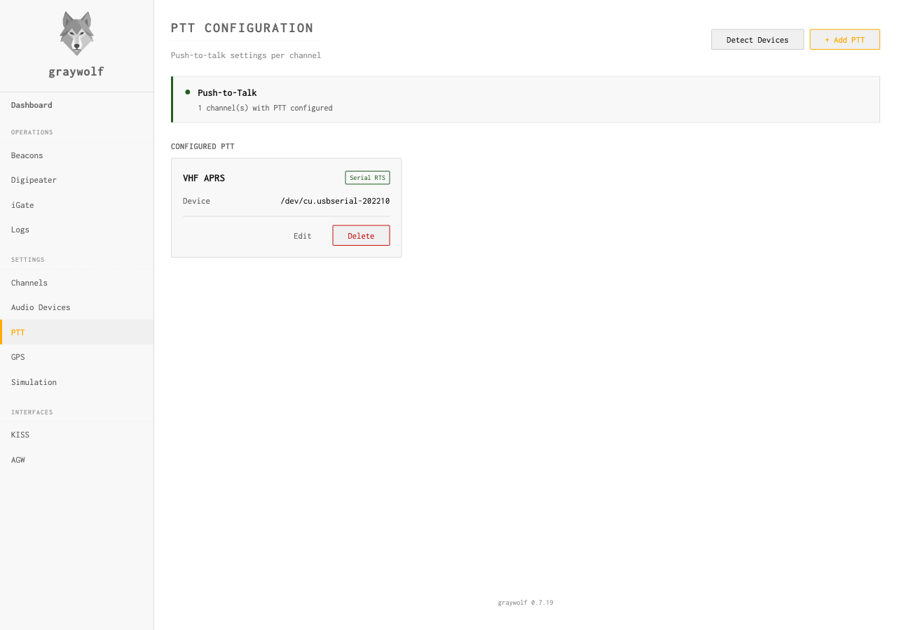

Push-to-Talk
Control radio keying and channel access
Push-to-talk (PTT) configuration tells graywolf how to key your radio
for transmission. Each radio channel has
its own PTT configuration. If a channel has no output device or PTT
method set to none, it operates in receive-only mode.

PTT Methods
| Method | Description | Typical Hardware |
|---|---|---|
none |
No PTT control (receive only) | — |
serial_rts |
Assert RTS pin on a serial port | USB-to-serial adapter, Digirig |
serial_dtr |
Assert DTR pin on a serial port | USB-to-serial adapter |
gpio |
Linux GPIO pin (sysfs or libgpiod) | Raspberry Pi GPIO header |
cm108 |
USB HID GPIO on CM108/CM119 audio codec | USB sound cards with built-in PTT |
PTT Settings
| Field | Default | Description |
|---|---|---|
method |
none |
PTT control method (see table above) |
device |
— | Serial device path (e.g., /dev/ttyUSB0) or GPIO device |
gpio_pin |
— | GPIO pin number (for gpio and cm108 methods) |
invert |
false |
Reverse PTT polarity (for backwards-wired rigs) |
Serial PTT
Serial RTS or DTR is the most common PTT method. The modem asserts the chosen pin when transmitting and de-asserts it when done. Most USB sound card interfaces (Digirig, SignaLink USB) use this approach.
# Find your serial device
ls /dev/ttyUSB* /dev/ttyACM*
The graywolf user must have permission to access the serial device.
Adding the user to the dialout group (Linux) handles
this. The systemd service file includes this group by default.
GPIO PTT (Raspberry Pi)
For Raspberry Pi setups, you can key the radio directly from a GPIO
pin. Specify the gpio method with the pin number. The
modem uses Linux’s GPIO character device interface.
GPIO pins output 3.3V. If your radio requires a different voltage or current, use a transistor or optocoupler circuit to interface the GPIO pin with your radio’s PTT line.
CM108 PTT (USB HID GPIO)
CM108-family USB audio codecs (C-Media CM108, CM108AH, CM108B, CM109, CM119) expose a HID interface alongside audio that can toggle GPIO pins for PTT. This is the method used by Digirig, AIOC, and many homebrew adapters that combine a USB sound card with PTT on a single device.
Select the cm108 method and choose the detected hidraw
device. The default GPIO pin is 3, which is correct for nearly all
commercial and homebrew designs.
| Device | VID:PID | Notes |
|---|---|---|
| CM108 / CM108AH / CM108B | 0d8c:* | Generic C-Media, Digirig |
| CM109 / CM119 / CM119A | 0d8c:* | Extended GPIO (1–8) |
| AIOC (All-In-One-Cable) | 1209:7388 | STM32-based CM108 emulation |
Linux permissions: The /dev/hidraw*
devices are typically root-only. Graywolf ships a udev rule
(99-graywolf-cm108.rules) that grants access to the
plugdev group for CM108-compatible devices. The systemd
service includes this group by default. If you installed manually,
add your user to the plugdev group and reload udev
rules:
sudo usermod -aG plugdev $USER
sudo udevadm control --reload-rules
sudo udevadm triggerUSB audio latency: USB sound cards add audio latency (typically 5–20 ms). If the beginning of your transmissions is clipped, increase TX Delay to compensate.
macOS: CM108 HID GPIO PTT is supported on macOS via the IOKit HID interface. Device enumeration and GPIO control work the same as on Linux and Windows. Unlike Linux, there is no automatic audio–HID correlation — select the correct device from the list manually.
CSMA Channel Access
CSMA (Carrier Sense Multiple Access) prevents graywolf from transmitting while another station is on the air. The TX governor checks the DCD (Data Carrier Detect) state before keying.
| Field | Default | Description |
|---|---|---|
slot_time_ms |
10 |
Time slot duration for p-persistence algorithm |
persist |
63 |
Persistence value (0–255). Higher = more aggressive |
dwait_ms |
0 |
Dwell/backoff time after DCD clears |
The p-persistence algorithm works as follows: when the channel is
clear (DCD inactive), graywolf generates a random number 0–255.
If it’s less than persist, it transmits immediately.
Otherwise, it waits one slot_time_ms and tries again.
TX Rate Limiting
The TX governor enforces per-channel rate limits to prevent excessive transmissions. Configure these through the TX timing API:
rate_1min |
Maximum packets per minute (0 = unlimited) |
rate_5min |
Maximum packets per 5 minutes (0 = unlimited) |
full_dup |
Skip CSMA entirely (for full-duplex setups) |
API Reference
| Method | Endpoint | Description |
|---|---|---|
| GET | /api/ptt/{channel_id} | Get PTT config for a channel |
| POST | /api/ptt/{channel_id} | Create or update PTT config |
| DELETE | /api/ptt/{channel_id} | Delete PTT config (receive only) |
| GET | /api/tx-timing/{channel_id} | Get CSMA parameters |
| POST | /api/tx-timing/{channel_id} | Create or update CSMA parameters |